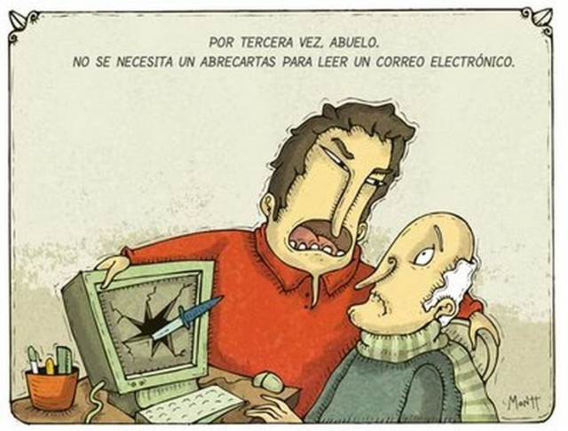
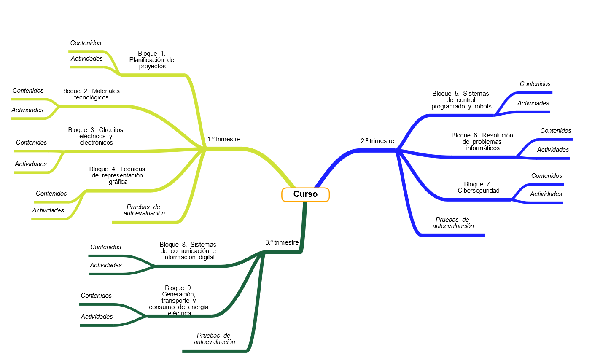

Acabáis de adentraros en el maravilloso mundo de la Tecnología y la Digitalización de 3º de la ESO. Navegad por mis páginas, bucead en mis contenidos y disfrutad con las actividades que hemos preparado para vosotros. ¡Pero cuidado! Deberéis lograr un buen resultado en las pruebas de autoevaluación de cada trimestre para consideraros auténticos y auténticas tecnólogas.

Alberto Montt. Aunque la tecnología se nos resista... ¡podremos con ella!(Todos los derechos reservados)
Mapa mental del curso

Mapa del curso
{"id":"0091aa85-f7e7-4243-b4f7-e06b251804e7","title":"Curso","mindmap":{"root":{"id":"bd96d94f-bc2f-4be3-9070-0db874b33b30","parentId":null,"text":{"caption":"Curso","font":{"style":"normal","weight":"bold","decoration":"none","size":20,"color":"#000000"}},"offset":{"x":0,"y":0},"foldChildren":false,"branchColor":"#000000","children":[{"id":"8d12d07b-b0f1-4235-93cc-4ed56766bbcc","parentId":"bd96d94f-bc2f-4be3-9070-0db874b33b30","text":{"caption":"1.º trimestre","font":{"style":"normal","weight":"normal","decoration":"underline","size":15,"color":"#000000"}},"offset":{"x":-236.54998779296875,"y":-108.066650390625},"foldChildren":false,"branchColor":"#cfe238","children":[{"id":"757e526d-8f91-4561-a958-feb78ee0bfb1","parentId":"8d12d07b-b0f1-4235-93cc-4ed56766bbcc","text":{"caption":"Bloque 1. Planificación de proyectos","font":{"weight":"normal","style":"normal","decoration":"none","size":15,"color":"#000000"}},"offset":{"x":-202.2833251953125,"y":-203.683349609375},"foldChildren":false,"branchColor":"#cfe238","children":[{"id":"2c39da04-b016-4d56-acdf-3d8a3a713df2","parentId":"757e526d-8f91-4561-a958-feb78ee0bfb1","text":{"caption":"Contenidos","font":{"style":"italic","weight":"normal","decoration":"none","size":15,"color":"#000000"}},"offset":{"x":-123.63336181640625,"y":-25},"foldChildren":false,"branchColor":"#cfe238","children":[]},{"id":"d3ef55b2-0108-4a7e-828f-8eda8d47fc6f","parentId":"757e526d-8f91-4561-a958-feb78ee0bfb1","text":{"caption":"Actividades","font":{"style":"italic","weight":"normal","decoration":"none","size":15,"color":"#000000"}},"offset":{"x":-120.03338623046875,"y":12},"foldChildren":false,"branchColor":"#cfe238","children":[]}]},{"id":"f51a1b0a-199c-43e1-9662-b1879455dc1e","parentId":"8d12d07b-b0f1-4235-93cc-4ed56766bbcc","text":{"caption":"Bloque 2. Materiales tecnológicos","font":{"weight":"normal","style":"normal","decoration":"none","size":15,"color":"#000000"}},"offset":{"x":-347.04998779296875,"y":-114.66668701171875},"foldChildren":false,"branchColor":"#cfe238","children":[{"id":"97f81522-49aa-4a49-9ebc-5c7d7dad9c32","parentId":"f51a1b0a-199c-43e1-9662-b1879455dc1e","text":{"caption":"Contenidos","font":{"weight":"normal","style":"italic","decoration":"none","size":15,"color":"#000000"}},"offset":{"x":-115.63336181640625,"y":-1},"foldChildren":false,"branchColor":"#cfe238","children":[]},{"id":"02dcc35c-d4e4-428f-bb1c-195fa7aaa778","parentId":"f51a1b0a-199c-43e1-9662-b1879455dc1e","text":{"caption":"Actividades","font":{"weight":"normal","style":"italic","decoration":"none","size":15,"color":"#000000"}},"offset":{"x":-116.0333251953125,"y":45},"foldChildren":false,"branchColor":"#cfe238","children":[]}]},{"id":"81fd6a4f-6636-46c7-bb22-7ab0cbae31c5","parentId":"8d12d07b-b0f1-4235-93cc-4ed56766bbcc","text":{"caption":"Bloque 3. CIrcuitos eléctricos y electrónicos","font":{"weight":"normal","style":"normal","decoration":"none","size":15,"color":"#000000"}},"offset":{"x":-335.01666259765625,"y":-22.550018310546875},"foldChildren":false,"branchColor":"#cfe238","children":[{"id":"7cee631e-0d19-40ef-8ddd-c954ff839adf","parentId":"81fd6a4f-6636-46c7-bb22-7ab0cbae31c5","text":{"caption":"Contenidos","font":{"weight":"normal","style":"italic","decoration":"none","size":15,"color":"#000000"}},"offset":{"x":-119.63336181640625,"y":30},"foldChildren":false,"branchColor":"#cfe238","children":[]},{"id":"34431d3e-18b2-4a6e-b05d-234efac5ce5b","parentId":"81fd6a4f-6636-46c7-bb22-7ab0cbae31c5","text":{"caption":"Actividades","font":{"weight":"normal","style":"italic","decoration":"none","size":15,"color":"#000000"}},"offset":{"x":-120.03335571289062,"y":81},"foldChildren":false,"branchColor":"#cfe238","children":[]}]},{"id":"b473afef-6dd6-4953-ac90-6e9d0f0b0649","parentId":"8d12d07b-b0f1-4235-93cc-4ed56766bbcc","text":{"caption":"Bloque 4. Técnicas de representación gráfica","font":{"weight":"normal","style":"normal","decoration":"none","size":15,"color":"#000000"}},"offset":{"x":-283.83331298828125,"y":70.71664428710938},"foldChildren":false,"branchColor":"#cfe238","children":[{"id":"6717a542-429e-4564-bec2-b86f8ee57fc7","parentId":"b473afef-6dd6-4953-ac90-6e9d0f0b0649","text":{"caption":"Contenidos","font":{"weight":"normal","style":"italic","decoration":"none","size":15,"color":"#000000"}},"offset":{"x":-123.63336181640625,"y":58},"foldChildren":false,"branchColor":"#cfe238","children":[]},{"id":"85a2c7a0-af47-4f73-8583-1d8a600b74ec","parentId":"b473afef-6dd6-4953-ac90-6e9d0f0b0649","text":{"caption":"Actividades","font":{"weight":"normal","style":"italic","decoration":"none","size":15,"color":"#000000"}},"offset":{"x":-130.03338623046875,"y":98},"foldChildren":false,"branchColor":"#cfe238","children":[]}]},{"id":"6cfcc5b1-e994-45ff-ad10-a2a4202454e9","parentId":"8d12d07b-b0f1-4235-93cc-4ed56766bbcc","text":{"caption":"Pruebas de autoevaluación","font":{"weight":"normal","style":"italic","decoration":"none","size":15,"color":"#000000"}},"offset":{"x":-222.29998779296875,"y":161},"foldChildren":false,"branchColor":"#cfe238","children":[]}]},{"id":"9ce5a464-a864-41bc-afeb-d1d7afc51aef","parentId":"bd96d94f-bc2f-4be3-9070-0db874b33b30","text":{"caption":"2.º trimestre","font":{"style":"normal","weight":"normal","decoration":"underline","size":15,"color":"#000000"}},"offset":{"x":128.1500244140625,"y":-104.11666870117188},"foldChildren":false,"branchColor":"#1e22ff","children":[{"id":"4cf735d4-7bc8-40aa-88e2-8c2d9900776b","parentId":"9ce5a464-a864-41bc-afeb-d1d7afc51aef","text":{"caption":"Bloque 5. Sistemas de control programado y robots","font":{"style":"normal","weight":"normal","decoration":"none","size":15,"color":"#000000"}},"offset":{"x":166.0499267578125,"y":-112},"foldChildren":false,"branchColor":"#1e22ff","children":[{"id":"f77aeeda-e866-4537-b197-acd470415d72","parentId":"4cf735d4-7bc8-40aa-88e2-8c2d9900776b","text":{"caption":"Contenidos","font":{"weight":"normal","style":"italic","decoration":"none","size":15,"color":"#000000"}},"offset":{"x":209.36669921875,"y":-23},"foldChildren":false,"branchColor":"#1e22ff","children":[]},{"id":"86412856-de55-416a-b581-ed2d04ff2cb6","parentId":"4cf735d4-7bc8-40aa-88e2-8c2d9900776b","text":{"caption":"Actividades","font":{"weight":"normal","style":"italic","decoration":"none","size":15,"color":"#000000"}},"offset":{"x":205.9666748046875,"y":23},"foldChildren":false,"branchColor":"#1e22ff","children":[]}]},{"id":"c84f08a8-c71d-474d-bd5c-08f68765df27","parentId":"9ce5a464-a864-41bc-afeb-d1d7afc51aef","text":{"caption":"Bloque 6. Resolución de problemas informáticos","font":{"style":"normal","weight":"normal","decoration":"none","size":15,"color":"#000000"}},"offset":{"x":216.7833251953125,"y":-13},"foldChildren":false,"branchColor":"#1e22ff","children":[{"id":"b0331e5e-76c7-4ae7-b577-244e0990268e","parentId":"c84f08a8-c71d-474d-bd5c-08f68765df27","text":{"caption":"Contenidos","font":{"weight":"normal","style":"italic","decoration":"none","size":15,"color":"#000000"}},"offset":{"x":207.36669921875,"y":-11},"foldChildren":false,"branchColor":"#1e22ff","children":[]},{"id":"c4afb72b-941c-463d-b9fc-8d12fac1948c","parentId":"c84f08a8-c71d-474d-bd5c-08f68765df27","text":{"caption":"Actividades","font":{"weight":"normal","style":"italic","decoration":"none","size":15,"color":"#000000"}},"offset":{"x":201.9666748046875,"y":34},"foldChildren":false,"branchColor":"#1e22ff","children":[]}]},{"id":"2910a92c-0a16-43d7-9556-de28fa6ce0dd","parentId":"9ce5a464-a864-41bc-afeb-d1d7afc51aef","text":{"caption":"Bloque 7. Ciberseguridad","font":{"style":"normal","weight":"normal","decoration":"none","size":15,"color":"#000000"}},"offset":{"x":206.38330078125,"y":102.99996948242188},"foldChildren":false,"branchColor":"#1e22ff","children":[{"id":"adac4289-90ff-43e6-9a66-3b12445f6ff3","parentId":"2910a92c-0a16-43d7-9556-de28fa6ce0dd","text":{"caption":"Contenidos","font":{"weight":"normal","style":"italic","decoration":"none","size":15,"color":"#000000"}},"offset":{"x":196.36669921875,"y":-20},"foldChildren":false,"branchColor":"#1e22ff","children":[]},{"id":"e120dfb3-1719-4585-a41d-af0c6ba1fb4f","parentId":"2910a92c-0a16-43d7-9556-de28fa6ce0dd","text":{"caption":"Actividades","font":{"weight":"normal","style":"italic","decoration":"none","size":15,"color":"#000000"}},"offset":{"x":195.9666748046875,"y":23},"foldChildren":false,"branchColor":"#1e22ff","children":[]}]},{"id":"4ee3ed00-4853-4eac-8a03-68f00d99b161","parentId":"9ce5a464-a864-41bc-afeb-d1d7afc51aef","text":{"caption":"Pruebas de autoevaluación","font":{"style":"italic","weight":"normal","decoration":"none","size":15,"color":"#000000"}},"offset":{"x":145.699951171875,"y":186.99996948242188},"foldChildren":false,"branchColor":"#1e22ff","children":[]}]},{"id":"f1570ad4-4b6b-4564-97d6-1da9adc36f75","parentId":"bd96d94f-bc2f-4be3-9070-0db874b33b30","text":{"caption":"3.º trimestre","font":{"style":"normal","weight":"normal","decoration":"underline","size":15,"color":"#000000"}},"offset":{"x":-98.08331298828125,"y":136.9666748046875},"foldChildren":false,"branchColor":"#1b633e","children":[{"id":"f44b740b-5fe9-4150-8b90-18d065c99a22","parentId":"f1570ad4-4b6b-4564-97d6-1da9adc36f75","text":{"caption":"Bloque 8. Sistemas de comunicación e información digital","font":{"style":"normal","weight":"normal","decoration":"none","size":15,"color":"#000000"}},"offset":{"x":-254.46661376953125,"y":5},"foldChildren":false,"branchColor":"#1b633e","children":[{"id":"3ff51c54-480f-49d7-89b7-58b25841aa62","parentId":"f44b740b-5fe9-4150-8b90-18d065c99a22","text":{"caption":"Contenidos","font":{"weight":"normal","style":"italic","decoration":"none","size":15,"color":"#000000"}},"offset":{"x":-162.63336181640625,"y":6},"foldChildren":false,"branchColor":"#1b633e","children":[]},{"id":"68f9f9db-a0cf-4978-8a6a-7bd00cd6f9f0","parentId":"f44b740b-5fe9-4150-8b90-18d065c99a22","text":{"caption":"Actividades","font":{"weight":"normal","style":"italic","decoration":"none","size":15,"color":"#000000"}},"offset":{"x":-161.03335571289062,"y":49},"foldChildren":false,"branchColor":"#1b633e","children":[]}]},{"id":"6e11073a-ff3f-4caa-95cf-852b2bdc00f6","parentId":"f1570ad4-4b6b-4564-97d6-1da9adc36f75","text":{"caption":"Bloque 9. Generación, transporte y consumo de energía eléctrica","font":{"style":"normal","weight":"normal","decoration":"none","size":15,"color":"#000000"}},"offset":{"x":-276.7999267578125,"y":108},"foldChildren":false,"branchColor":"#1b633e","children":[{"id":"80f0b54e-cc5d-489a-979d-b761b3406ccb","parentId":"6e11073a-ff3f-4caa-95cf-852b2bdc00f6","text":{"caption":"Contenidos","font":{"weight":"normal","style":"italic","decoration":"none","size":15,"color":"#000000"}},"offset":{"x":-162.63333129882812,"y":18},"foldChildren":false,"branchColor":"#1b633e","children":[]},{"id":"85cd5031-43d5-4021-8288-6ce85313b125","parentId":"6e11073a-ff3f-4caa-95cf-852b2bdc00f6","text":{"caption":"Actividades","font":{"weight":"normal","style":"italic","decoration":"none","size":15,"color":"#000000"}},"offset":{"x":-160.03334045410156,"y":68},"foldChildren":false,"branchColor":"#1b633e","children":[]}]},{"id":"84f03b0d-2c8f-426e-95d1-b080158bd38f","parentId":"f1570ad4-4b6b-4564-97d6-1da9adc36f75","text":{"caption":"Pruebas de autoevaluación","font":{"weight":"normal","style":"italic","decoration":"none","size":15,"color":"#000000"}},"offset":{"x":-194.2999267578125,"y":221},"foldChildren":false,"branchColor":"#1b633e","children":[]}]}]}},"dates":{"created":1708410659575,"modified":1708411492192},"dimensions":{"x":4000,"y":2000},"autosave":false}